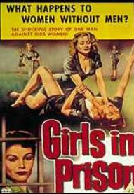

ACI Hash
Run #1018, October 3, 2005
Hare: Oozing S.D.
Co-Hare: Basket Boom Boom
Location: Adult Correctional Institute (State Prison), Cranston
Weather: 60’s, Clear
Present: Fuwangi Boner, Dr W.H.O., Tinker, WIPOS, Bondo Jovi, Dry Foot Fairy, Ben, Seamus.
The Run:
The RIH3 has a history of setting runs from questionable places. Places where one can get arrested. Places where one can get mugged. Places where one could get injured. But it is rare that a run is set in such a spot that no CONCEIVABLE excuse could EVER justify the presence of a hash, if apprehended. Tempting the fates almost to the breaking point, our hare and co-hare decided this night to go for broke. Picture a bunch of men, running around the Maximum Security Areas of the State Penitentiary, with flashlights, after dark, covered with mud, blowing whistles. Brilliant!
At least there’d be a warm bed for the night,
even if you did have to share it with Bubba.
The start was at Mulligan’s Island, a driving range/batting cage/executive golf course inexplicably located just outside the outer barbed wire of the Adult Correctional Institution (ACI) in Warwick. WHO and Fuwangi were first to arrive. They waited in a dirt lot just above the pitch and putt area. WIPOS and Tinker were next. They parked in the main lot for Mulligan’s. Finally, the co-hare arrived and directed them to park outside of the gates, unless they wanted their cars incarcerated. They regrouped, appropriately enough, in a parking lot for the Mental Hospital. Bondo arrived. Notably, no women were present. Or were there?

This must be what the hare had in mind!
Against all reason, the run began. They ran back into the golfing area, southwest on pavement, and turned south along the edge of the driving range. A check was found. Milling about, trying to find trail, without being the first one to turn into the prison grounds caused a certain delay. WHO continued south with Fuwangi and Tinker, into some promising shiggy. The hares stayed back with WIPOS. An irritated attendant for the driving range approached. He pointed out that not only was the group trespassing, but they were in considerable danger with the balls from the range on one side, and the guns of the prison on the other. The hares quickly ushered the group onto the street, slightly north of east.
One tough Golf Course!
Now the hashers ran northeast, on West Road. They passed through the motor pool for the prison, and through various low security areas. Fortunately, being state workers, no one was around. The marks were in chalk, sufficiently obscure as to give Amish a run for his money with respect to indecipherability. But with some prompting from the hares, Fuwangi took the lead as they turned south on Foster, and then northeast on the front lawns of some administration buildings.
They crossed Power Road. Trail now led into some bushes and southeast down a track in a tunnel under Pontiac Road. The path was overgrown and rapidly led to pools of slowly moving water, strewn with garbage. The smell was most offensive. And the water proved to be hot! The hares mumbled something about this being the boiler room overflow. Right! This was laundry room sewage, almost certainly. Great! Trying to clean our shiggy shoes! Tinker took the high road through bushes and poison ivy, while the rest followed Basket into the worst of the muck. Of course, Tinker became FRB.
Running through sewers adjacent to prisons!
Brilliant!
Out they came, led by Tinker though a parking/staging area for the National Guard. Great! Get the military involved! But again, no one was present to object. WHO passed Tinker and headed southeast to Sharpe Drive. A check allowed the others to catch up and they turned southwest. A second check was found, on an overgrown dirt road. This turned the group northeast, parallel to the Pawtuxet River. But the relief from pavement was all too short. They emerged on Kenney Dr.
Continuing north on Kenney Dr. they soon came to a High Security Unit, with guard towers and double wire. A voice came over a loudspeaker, prompting WHO and Fuwangi in the lead, to do a sharp about-face. And the hare showed that the trail did in fact diverge east down the sharp slope to the river’s edge. Fuwangi, WHO and the hare proceeded down. The rest continued past the wire with Basket, trusting that the loudspeaker was directed inside the wire, rather than at the hashers.
Even more Brilliant!
It was by now obvious that the hare had something special in mind. He encouraged the two joyfully. Trail did in fact finally approach enjoyable shiggy, with bushes, weeds and poison ivy obliterating the path that had once been there. WHO and Fuwangi followed marks until all of a sudden, they disappeared. Then the hare took over, almost eagerly. Anyone in their right mind would have rejoined Bondo, Basket, Tinker and WIPOS up above. But then again, no one in their right mind would have shown up for this run in the first place!
Oozing led, of course, to a long and dark 48” sewer pipe. The three crossed under Kenney Dr, painfully crouched. There was a partial cave-in, half way. The hare and WHO ducked under. But Fuwangi in the rear, was conserving his flashlight. He whacked his head on a re-bar. There were some nice sounds of further loose earth falling into the pipe. But unfortunately, Fuwangi was not buried alive. They emerged only to climb back out and resume their northerly progress on Kenney. A complete waste of time! Contrived tunnel usage! Unnecessary shiggy! No cave-in fatalities! But the hare has been this way ever since he was a teenager in Europe.
Proof remains of Oozing’s misspent youth!
The group ahead had not gotten very far. The trail led to a check just under the Clydesdale statue, at the Anheuser-Busch distribution center, and they were milling about in the busches (ha, ha!). Finally, a mark was found leading back to the river, and to the Beer Check, under the Rt 37 (East) bridge. The beer was opened. A few songs were sung, mostly to take advantage of the under-bridge acoustics. WIPOS, dressed in six layers, complained that the mosquitoes were getting to him. Fuwangi, still dizzy fro his head injury, re-sprained his ankle. The whining proved too much! They headed out.
The trail continued north under the separate Rt 37 (West) bridge. They came out of the shiggy onto Worthington Rd. A check was easily mastered, and WHO led northwest on Pettaconsett to Pontiac. They crossed and ran through a seires of fastfood drive-throughs onto Sockanosett Cross Rd. A small amount of confusion, and they were back on abandoned railroad tracks turning southwest. Guess what? Another tunnel under Rt 37! This one was lovely, with no moisture, few invasive plants, attractive graffiti, and large amounts of broken glass. A brief run on the old railroad ties, then back out to Power.
Trail now meandered on unexceptional pavement southwest to Howard and then northwest back to the cars. Waiting for them at the cars: Dry Foot. And the police. The young policeman had been lying in wait, hoping to make a name for himself by stopping Rhode Island’s first major prison escape. It was all too clear that this group didn’t fit the profile. He wracked his brain, trying to think of a reason to arrest them all. But finally he let them go, with a warning.
The policeman’s concept of a prison escape.
Because of the interruptions, it was decided to circle at the On On On. The hare recommended the famous “Billy’s Frosted Mug” (See run #819). They drove as a group into Cranston, and circled up in the rear parking lot. Ratings for the run reflected the excessive pavement, unnecessary shiggy, redundant tunnels, and lack of women in prison. But what put it firmly over the edge was the lack of arrests. Total: -6.9! Hashit was variously given to Dry Foot, Basket, Oozing, and ultimately Tinker. But no one really cares anymore, without a physical hashit to award. At any rate, they moved into the restaurant. They feasted on RI classics: NY System-style wieners, and snail salad. The jukebox was cranking, so their singing was ineffective. But at least they weren’t thrown out.
Proper technique for serving wieners:
wear gloves, and don’t skimp on the forearm hair!
On On